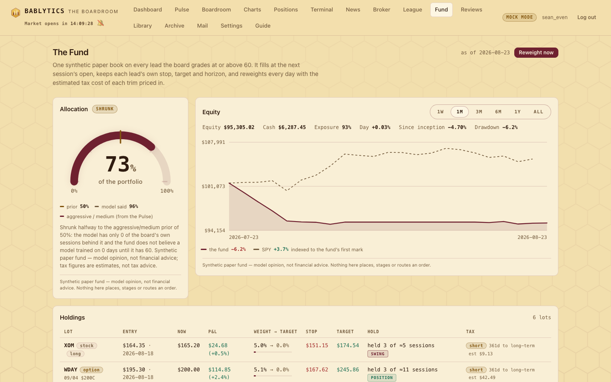

Engine · the synthetic book
The Fund
One synthetic paper book that takes every lead the board grades 60 or better, holds it on the board's own stop, target and horizon, and reweights it once a day — with a small transformer deciding what fraction of the portfolio belongs in the book and a tax lens that can veto a trim. Synthetic paper money; nothing executes; tax figures are estimates, not advice.
What the Fund is#
The Fund is one book. Every morning run the board signs a ranked twenty; the Fund admits the ones graded 60 or better, fills them on paper at the next session's open, and then holds each position on the exact terms the board wrote for it — that lead's stop, that lead's target, that lead's time horizon, that lead's written invalidation. Once a day, after the close, it marks the whole book, applies the exits that fired, admits what the board added, asks a small transformer what fraction of the portfolio should be in the fund at all, runs the proposed changes past a tax lens, and writes the orders and a paragraph explaining itself.

The daily cycle#
The scheduler job fund_reweight runs weekdays at 17:10 ET — after the 16:45 outcomes job has recorded the day's realized returns, before the 19:00 Evening Court — behind the fund_enabled setting (default on). It is idempotent per date: running it again for the same session replaces that day's row rather than stacking a second one, so the manual Reweight now button is safe to press twice.
Admission: who gets in#
A lead is admissible when its final grade is at or above fund_min_grade (default 60) on a completed morning run. Admission is checked after each run and again on the daily reweight, and it obeys three rules the board already lives by:
- One slot per underlying. The Croupier's one bet in two slots rule, made mechanical: an option lead and its own stock are one slot, and the better expression takes it. The Fund never doubles a bet by writing it twice.
- Not already held. A name the Fund is already in is not re-admitted; a fresh ≥60 grade on a name it holds shows up as conviction the model can weight, not as a second lot.
- A hard cap.
fund_max_positions(default 20) — the ceiling is the board's own book size, not a diversification theory.
Fills are paper. A lot opens at the next session's open after the run date, priced from the same daily-bar helpers the Paper League uses. Option leads fill at the contract's mark when the chain gives one; when it does not, the underlying is used and the lot is flagged proxy_underlying, which the holdings table shows rather than hides. No slippage, no commission, fractional quantities — a paper convention, not an execution model.
What the lot carries from the lead is unchanged: the stop and target from the levels rail, the horizon (class, expected sessions, window and basis), the board's written invalidation with its Bailiff trigger id where one was parsed, and the mandate the run was generated under. The Fund does not re-derive the board's levels or improve on them. If the board wrote a bad stop, the Fund wears it.
The six exits, all on a close#
Exits are checked at every mark and every reweight. The discipline is the Bailiff's: an intraday touch never closes a lot. A wick through the stop at 10:40 that closes back above it leaves the position open, because the rule was written against a close and a close is what settles it.
exit_reason | Condition | Basis |
|---|---|---|
stop | the lead's stop is breached | on a close |
target | the lead's target is reached | on a close |
horizon | sessions held ≥ ceil(horizon.days × fund_horizon_slack) — the board's own expected hold plus a grace factor (fund_horizon_slack, default 1.25) | session count |
kill | the lead's Bailiff trigger fired — the board's written invalidation, verbatim | the trigger's own basis |
decay | a later run grades the same underlying below fund_exit_grade (default 50) — the room changed its mind | the new run |
expiry | an option lot reaches DTE 0 | the contract |
Every exit records the reason, the price, the date, the number of sessions held, the realized P&L, and the tax-lot outcome. A lot that exits on horizon is the most interesting row in the log: it means the thesis neither worked nor broke inside the time the board said it would take, which is a result the board has never before had to face in writing.
The allocation transformer#
The only learned step in the cycle answers one question: how much of the portfolio belongs in this book today? Not which name — the board picked the names. The model outputs an allocation a ∈ [0, 1] and a set of weights across the open lots; the exposure of lot i is a × wi.
What it reads#
The input is a sequence of the last 20 sessions, one token per session, each a fixed-order feature vector (FUND_FEATURE_NAMES, versioned and hashed exactly like the Pulse's): the day's book statistics (how many leads cleared 60, mean and maximum grade, grade dispersion, mean horizon days, the option share, mean stop distance and target distance in ATR, the mandate as a one-hot), realized feedback (the prior book's signed 1-day and 5-day returns, hit rate, the Spearman correlation of grade to return over the last ten sessions, the current drawdown, the fund's own 5-day equity change), regime (VIX level and change, SPY 1-day and 5-day, a breadth proxy, whether house triggers are armed), and the goal one-hots — risk and size, read from pulse_risk/pulse_size unless the fund has its own overrides. A missing value becomes 0 and sets an explicit *_missing flag; nothing is silently imputed.
The architecture#
Hand-written numpy — forward and backward, seeded, no torch, like everything else in this app. An embedding to 32 dimensions with a learned positional encoding, then two blocks of causal multi-head self-attention (2 heads) → residual + LayerNorm → a 32→64→32 GELU MLP → residual + LayerNorm. The last token feeds two heads: alloc_head, a linear layer through a sigmoid, gives the allocation; score_head, a small shared MLP applied to each candidate lot's own feature vector, gives scores that a temperature softmax — the temperature set by your risk profile — turns into weights. The optimizer is the same Adam the Pulse's population uses, imported rather than rewritten. A finite-difference gradient check over every parameter block is part of the round's acceptance.
What it is trained on, and what that is worth#
Training is supervised on history. For each past session the target is that day's admitted book's realized risk-adjusted forward return over the next K sessions (K = the book's median horizon days, clipped to 1–10), squashed into [0, 1] by 0.5 + 0.5·tanh((forward return − friction) / (vol × λ)) — where λ is RISK_LAMBDA from the Pulse's goal module. That is the same trick the Pulse uses: one model, three temperaments. The identical day yields a lower allocation target for the conservative profile than for the aggressive one, because the penalty on variance is larger. The loss is Huber on the allocation plus a pairwise ranking loss on the weight head — within a day, the lots that actually did better should have scored higher.
data_sources and in the model card. Nothing on this site or in the app claims the board's live record is longer than it is.Shrinkage: what the model says when it does not know#
Because the sample is small, the deployed allocation is deliberately pulled toward a prior. While the effective number of training days is below fund_min_train_days (default 60), the fund reports
a = 0.5 × a_model + 0.5 × a_prior
a_prior = size_base (small .25 · medium .50 · large .75) × risk_factor (conservative .6 · moderate .8 · aggressive 1.0)and the payload carries "shrunk": true with the reason in words. The dial shows both numbers: where the model landed and where the prior sits. It is the honest position for a model with a few dozen supervised days — half of what you are looking at is your own stated goals, and the page says so instead of dressing a prior up as a forecast.
The gate, and the rejections#
Training is coupled to the court, the rule since round 22: the Evening Court calls fund.train.nightly() behind fund_train_enabled (default on), with a deeper weekly pass on Sunday beside the Pulse's own generation. A candidate checkpoint deploys only if it beats the incumbent on a frozen held-out slice — the last 20 % of sessions by date — on both the allocation loss and the weight ranking, and is no more than 10 % worse on any single risk profile. Every decision, deployed or rejected, with its numbers, appends to data/fund/meta.json and data/fund/self-court.jsonl, and the Model card shows the last ten as dated chips. Rejections are the normal outcome and are displayed as such; a gate that always passes is not a gate.
The first deployed checkpoint scores an allocation loss of 0.018776 on its held-out slice against a baseline of 0.018698 for "predict the goal prior every day" — marginally worse than doing nothing — and its ranking head is a coin flip at 0.4966. It deployed only because it was the first checkpoint, with no incumbent to beat, and its own record says so in words. An earlier evaluation claimed it beat the baseline by 34 %; that number came from a feature reading four sessions past its own date — a partial copy of the label — which the adversarial pass caught and the code now prevents. This is why the shrinkage rule above exists: a model with no demonstrated edge cannot move the dial far from your stated goals. The gate will keep rejecting candidates until one earns its place.
The checkpoint (data/fund/transformer.npz + meta.json) stores the feature names and their hash. Loading a checkpoint whose hash does not match the current vector raises rather than proceeding — the round-21 lesson, learned when a model answered confidently on a state it had never seen.
The tax lens#
The Fund is the only engine in the app that reasons about after-tax outcomes, and it does so with rough arithmetic on rates you set. These are estimates, not tax advice; they do not know your bracket, your other income, your account type, your carry-forwards or your state's actual rules, and a synthetic fund has no tax liability at all. They exist to make one behaviour visible: a model edge that looks good gross can be worth nothing after the tax on realizing it.
Each lot is a tax lot — opened_on, quantity, basis, and on exit closed_on, proceeds, realized P&L, term and a wash flag. The term is short when the lot was held under 365 days and long at or beyond it, taxed at fund_tax_short_rate (default 0.37) or fund_tax_long_rate (0.20), plus fund_tax_state_rate (default 0.0). The whole lens can be switched off with fund_tax_enabled.
The hysteresis rule — when tax beats the model#
For every trim or exit the model proposes, the reweight computes the realized gain or loss, the estimated tax at that lot's term, and the after-tax edge:
edge_after_tax = expected_edge_of_reallocation − tax_costThe trim executes only when edge_after_tax clears fund_tax_hysteresis (default 0.15 % of fund equity). Otherwise the lot is held, and the order log records why in plain words — "held for tax: realizing $412 would cost $152 in estimated tax; the model's edge was only $96." That line is the point of the whole lens. It is also the one place in Bablytics where an explicit, legible rule is allowed to overrule the model, and the disagreement is kept in the record rather than resolved silently.
The wash-sale watch#
Closing a lot at a loss marks that underlying. If the board grades it ≥60 again within fund_wash_days (default 30), the Fund still admits it — it is synthetic, and refusing would distort the board's record — but the order and the holdings row are flagged wash_risk, with the sentence spelled out: a repurchase inside 30 days would disallow that loss in a taxable account. Admitting and disclosing beats quietly pretending the calendar does not exist.
The daily tax block#
Each session's row carries a tax summary: realized short-term and long-term gains year to date, unrealized short and long, the estimated tax if the whole book were liquidated at today's mark, the tax drag on the day's turnover, and the lots that cross into long-term treatment within 30 days. The holdings table shows the same per lot as a short/long chip and a hint like "12d to long-term".
The note#
Every reweight ends in one plain-English paragraph on fund_daily: what came in, what left and why, where the allocation moved and why it moved there, and the tax sentence. It is written to be read out of context — in the Archive, months later — without the surrounding numbers, in the same spirit as the Executive's memo. If the paragraph and the order log disagree, the order log is right and that is a bug.
How it differs from the Paper League#
The two paper engines answer different questions and are deliberately not merged. The full comparison is on the League's page; the short version: the League scores philosophies with sixteen mechanical books, and the Fund scores the signed ≥60 book as one managed portfolio with the board's own risk terms and a model deciding size.
No execution path — stated plainly#
bablytics/fund/ imports the broker package, reads or writes the staged-order tables, or builds anything that could be sent anywhere. The integrator's grep for broker, staged-order and execution references across the package returns zero lines and is part of the round's acceptance, exactly as it is for the Pulse and the Bailiff. The Fund's output is a number between 0 and 1, a set of weights, a table of paper lots and a paragraph. If you act on any of it, that is your decision, made elsewhere, in your own account, by your own hand.Honest limits#
- It is not money and it is not your portfolio. The allocation is a fraction of a notional portfolio the app has invented for the purpose. The Fund does not read your holdings, does not know your account, and is not a suggestion about what to do with either.
- The live sample is a few dozen sessions. The transformer is small by design and shrunk toward your stated goals precisely because the data cannot yet support anything stronger. Read the allocation as a temperament, not a forecast.
- Most of the training history never happened. The bootstrapped pseudo-runs are a numeric stand-in for a book of leads, not the board's own record. A backtest over them is a statement about momentum-and-ATR ranking, not about sixteen seats arguing.
- Tax figures are estimates. Flat rates, no brackets, no carry-forwards, no account types, no state rules beyond one number you type, and no knowledge of anything you hold outside the app. The hysteresis rule is real arithmetic on made-up rates.
- Fills are the open and the close. No slippage, no commission, no partials, no borrow cost on shorts, and option lots that fall back to the underlying when the chain has no mark — flagged, but still an approximation.
- The exits are the board's, faults included. A stop the board wrote too tight will stop the Fund out too; that is the design. The Fund is evidence about the board's risk terms, which means it has to be allowed to lose on them.
- Close basis cuts both ways. An intraday collapse that recovers by 16:00 leaves the lot open; an intraday spike through the target does not bank it. The rule is chosen for honesty about what can be verified after the fact, not for the best-looking curve.
API, settings and files#
- GET /api/fund
- allocation (value, prior, shrunk, reason), goals, equity, holdings with levels, horizon progress and per-lot tax, today's admissions and recent exits, the tax summary, the model block, the note and the disclaimer
- GET /api/fund/history?window=
- the equity series and the allocation series for the curve
- GET /api/fund/orders
- the paper order log: admit · add · trim · exit · hold, target versus actual weight, the reason
- POST /api/fund/reweight
- run today's cycle now (signed in); idempotent per date
- GET /api/fund/model
- checkpoint date, sequence length, the honestly-labelled training data, held-out numbers, the last gate decision
- GET / PUT /api/fund/settings
- the fund knobs
- fund_enabled · fund_min_grade · fund_max_positions · fund_horizon_slack · fund_exit_grade
- 1 · 60 · 20 · 1.25 · 50
- fund_capital · fund_reweight_hour · fund_reweight_minute
- 100,000 notional paper dollars · 17 · 10 (the scheduled reweight, weekdays, New York time — after the 16:45 outcomes job and before the 19:00 court)
- fund_train_enabled · fund_min_train_days
- 1 · 60 (below this, the allocation is shrunk toward the goal prior)
- fund_tax_enabled · fund_tax_short_rate · fund_tax_long_rate · fund_tax_state_rate · fund_tax_hysteresis · fund_wash_days
- 1 · 0.37 · 0.20 · 0.00 · 0.0015 of equity · 30
- fund_positions · fund_equity · fund_orders · fund_daily
- the lots, the daily equity snapshots, the order log and one row per session (allocation, weights, model version, tax block, note) — all in your own local database
- data/fund/
transformer.npz,meta.json(feature names, hash, normalization, training record, gate history),self-court.jsonl